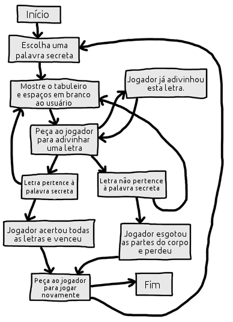
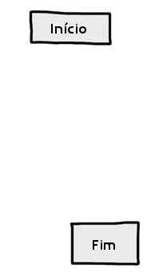
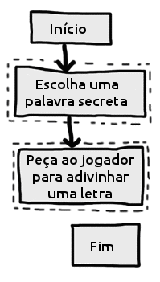
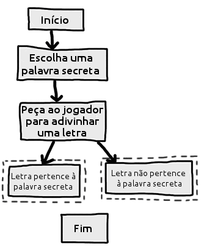
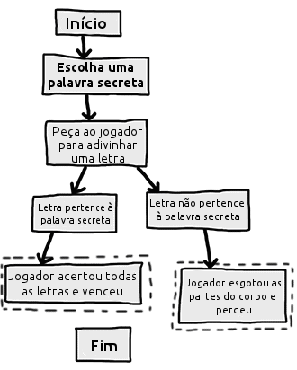
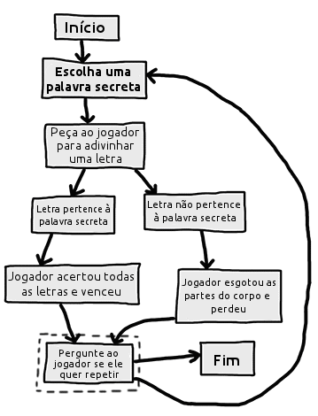
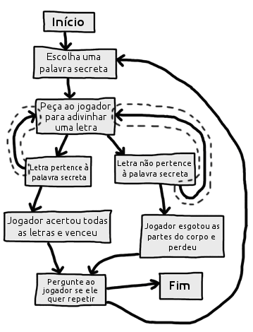
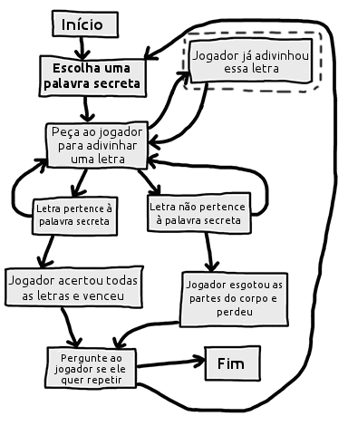
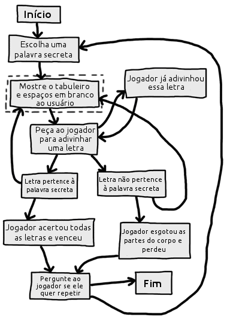

Neste capítulo, iremos projetar o Jogo da Forca. Esse jogo é mais complicado que nosso primeiro jogo, mas é também muito mais divertido. Como esse é um jogo avançado, nós devemos primeiramente planejá-lo criando um diagrama chamado fluxograma (a ser explicado mais tarde). No próximo capítulo, iremos escrever de verdade o código do Jogo da Forca.
Caso você nunca tenha jogado o Jogo da Forca antes, vamos primeiro aprender suas regras.
Caso você não saiba, o Jogo da Forca é um jogo para duas pessoas que é normalmente jogado com papel e caneta. Um jogador pensa em uma palavra, e então desenha um espaço em branco na página para cada letra da palavra. Então, o segundo jogador tenta adivinhar as letras que podem compor a palavra. Se ele errar, o primeiro jogador desenha uma única parte do corpo do homem da forca. Se o segundo jogador conseguir adivinhar todas as letras na palavra antes que o homem da forca tenha sido completamente desenhado, ele ganha. Mas se ele não conseguir descobrir a tempo, o homem é enforcado e ele perde o jogo.
Aqui temos um exemplo de o que o jogador deve ver quando executa o programa do Jogo da Forca que iremos escrever mais tarde. O texto que o usuário digita aparece em negrito.
JOGO DA FORCA
+---+
| |
|
|
|
|
=========
Letras perdidas:
_ _ _ _
Adivinhe uma letra:
a
+---+
| |
|
|
|
|
=========
Letras perdidas:
_ a _ _
Adivinhe uma letra:
x
+---+
| |
O |
|
|
|
=========
Letras perdidas: x
_ a _ _
Adivinhe uma letra:
r
+---+
| |
O |
| |
|
|
=========
Letras perdidas: xr
_ a _ _
Adivinhe uma letra:
t
+---+
| |
O |
| |
|
|
=========
Letras perdidas: xr
_ a t _
Adivinhe uma letra:
a
Você já adivinhou essa letra. Escolha novamente. Adivinhe uma letra:
g
+---+
| |
O |
| |
|
|
=========
Letras perdidas: xr
g a t _
Adivinhe uma letra:
o
Isso! A palavra secreta é "gato"! Você venceu! Você deseja jogar novamente? (sim ou não)
não
Os gráficos para o Jogo da Forca foram todos compostos por caracteres do teclado impressos na tela. Esse tipo de gráfico é chamado de Arte com ASCII (pronunciado "asqui"), porque os caracteres do teclado (tais como letras, números, e todos os outros símbolos no teclado) são chamados de caracteres ASCII. ASCII significa American Standard Code for Information Interchange (nós iremos aprender mais sobre ele no capítulo sobre a Cifra de Caesar). Abaixo, temos alguns gatos feitos com Arte com ASCII:
__________________
_____/ xx xxx \_____
_/xxx xx xxx xxx \__
__/ xxx xxx xx xxx \__
/xxxxxxxxx xx xx xx xx xxx\
^___^ / xx /\ xx xx\
| ) / / \ x xx \
|. . ) | /\ | \ xx x\
( v ) | | \ | \____ Z x \
\____ | | | \____/ \ z xxx |
| \ | | \ z |
| | \/ \ \
| \ / ____/ | |
| | | __| \____ | xxx|
| | | \ / | ___ ___------- __/ x|
| | | |-. / | | | _______ ____/ |
| | | ____/ | | o\ -------- \_/ _/ ___/ xx /
((((()(______/ |oo \ _____/ _/______/ xx/
\ \__ __/ xx /
\ \______________/ x_/
\____ _______/
\_______________________________/
Este jogo é um pouco mais complicado do que aqueles que vimos até agora, então vamos parar um pouco para pensar em como juntar tudo isso. Primeiramente, iremos criar um fluxograma (como aquele feito ao final do capítulo do Reino do Dragão) para nos ajudar a visualizar o que o programa irá fazer. Este capítulo irá mostrar o que são fluxogramas e porque eles são úteis. O próximo capítulo irá apresentar o código-fonte para o Jogo da Forca. Um fluxograma é um diagrama que mostra uma série de passos como um conjunto de "caixas" conectadas por setas. Cada caixa representa um passo, e as setas mostram como um passo leva a outros passos. Você pode seguir pelo fluxograma colocando o seu dedo na caixa "Início" do fluxograma e seguindo as setas para outras caixas até você chegar à caixa "Fim". Você só pode passar de uma caixa para a outra na direção da seta. Você nunca pode andar para trás (a menos que haja uma segunda seta levando para trás, como na caixa "Jogador já adivinhou essa letra" abaixo.) Aqui está um fluxograma completo para o Jogo da Forca (Figura 8-1).

Figura 8-1: O fluxograma completo para o que acontece no Jogo da Forca.
É claro que nós não precisamos fazer o fluxograma. Poderíamos começar já escrevendo código. Porém, frequentemente, quando iniciamos a programar, nós iremos lembrar de coisas que precisam ser adicionadas ou modificadas, que não haviam sido consideradas antes. Podemos acabar tendo que modificar ou apagar um monte de código que escrevemos, o que seria um desperdício de esforço. Para evitar isso, é sempre melhor pensar cuidadosamente, e planejar como o programa irá funcionar antes de começar a escrevê-lo.
O fluxograma a seguir é fornecido como um exemplo de como os fluxogramas se parecem e como fazê-los. Por enquanto, como você está apenas utilizando o código-fonte deste livro, você não precisa desenhar um fluxograma antes de escrever código. O programa já está previamente escrito, assim você não precisa planejar nada. Mas, quando você escrever seus próprios jogos, um fluxograma será muito útil.
Tenha em mente, seus fluxogramas não precisam se parecer exatamente como este. Contanto que você entenda o fluxograma que você fez, ele será muito útil quando você começar a codificar. Nós iremos iniciar com um fluxograma que tem somente uma caixa "Início" e uma caixa "Fim", como mostra a Figura 8-2:

Figura 8-2: Comece seu fluxograma com uma caixa Início e uma caixa Fim.
Agora vamos pensar sobre o que acontece quando jogamos o Jogo da Forca. Primeiro, um jogador (o computador neste caso) pensa em uma palavra secreta. Então, o segundo jogador (a pessoa executando o programa) irá adivinhar letras. Vamos adicionar caixas para esses eventos, como mostrado na Figura 8-3. (As caixas que são novas para cada fluxograma possuem uma linha tracejada ao redor delas.) As setas mostram a ordem em que o programa deveria andar. Isto é, primeiro o programa deveria trazer uma palavra secreta, e depois deveria pedir ao usuário para adivinhar uma letra.

Figura 8-3: Desenho dos dois primeiros passos do Jogo da Forca como caixas com descrições.
Mas o jogo não termina depois que o jogador adivinha uma letra. Ele precisa verificar se aquela letra está ou não contida na palavra secreta.
Existem duas possibilidades: a letra estará na palavra ou não. Isso significa que nós precisamos duas novas caixas em nosso fluxograma. Da caixa "Peça ao jogador para adivinhar uma letra", nós somente podemos nos mover para a caixa "Letra pertence à palavra secreta" ou para a caixa "Letra não pertence à palavra secreta". Isto irá criar uma ramificação (isto é, uma divisão) no fluxograma, como mostra a Figura 8-4:

Figura 8-4: Existem duas coisas diferentes que poderiam acontecer depois que o jogador adivinha, então temos duas setas indo para diferentes caixas.
Se a letra pertence à palavra secreta, nós precisamos verificar se o jogador já adivinhou todas as letras, o que significaria que o jogador ganhou o jogo. Mas, se a letra não pertence à palavra secreta, outra parte do corpo é adicionada ao homem que está sendo enforcado.
Nós podemos adicionar caixas para aqueles casos também. Nós não precisamos de uma seta da caixa "Letra pertence à palavra secreta" para a caixa "Jogador esgotou as partes do corpo para colocar e perdeu", porque é impossível perder enquanto você está escolhendo letras corretas. Também, é impossível vencer quando você está escolhendo somente letras incorretas. Assim nós não precisamos desenhar aquela seta também. Nosso fluxograma agora se parece com a Figura 8-5.

Figura 8-5: Despois da ramificação, os passos continuam em seus caminhos separados.
Uma vez que o jogador venceu ou perdeu, nós iremos perguntá-lo se ele deseja jogar novamente com uma nova palavra secreta. Se ele não deseja jogar novamente, o programa irá terminar. Se o programa não terminar, nós pensamos em uma nova palavra secreta, como mostrado na Figura 8-6:

Figura 8-6: O jogo termina se o jogador não quiser jogar novamente, ou o jogo volta ao início.
Este fluxograma pode parecer que está terminado, mas há algo que nós estamos esquecendo: o jogador não adivinha somente uma vez. Ele deve permanecer adivinhando letras até que ganhe ou perca o jogo. Nós precisamos desenhar duas novas setas de forma que o fluxograma represente isso, como mostrado na Figura 8-7:

Figura 8-7: O jogo não termina sempre após uma adivinhação. As novas setas (delineadas) mostram que o jogador pode adivinhar novamente.
Nós estamos esquecendo algo mais. E se o jogador adivinha uma letra que já acertou anteriormente? Ao invés de fazê-lo vencer ou perder, nós iremos permitir que ele adivinhe uma letra diferente, como mostrado na Figura 8-8.

Figura 8-8: Adicionando um passo caso o jogador adivinhar uma letra que já adivinhou.
Nós também precisamos um forma para mostrar ao jogador como ele está indo. Para isso, nós iremos mostrá-lo o tabuleiro do Jogo da Forca, assim como a palavra secreta (com espaços em branco para as letras que ainda não adivinharam). Esses indicativos visuais irão permitir ao jogador ver quão perto de ganhar ou de perder ele está.
Nós precisaremos atualizar essa informação a cada vez que o jogador adivinhar uma letra. Nós podemos adicionar uma caixa "Mostre o tabuleiro e espaços em branco ao usuário." entre as caixas "Escolha uma palavra secreta" e "Peça ao jogador para adivinhar uma letra", como mostrado na Figura 8-9. Essa caixa irá nos lembrar de que nós precisamos mostrar ao jogador um tabuleiro do Jogo da Forca atualizado, de forma que ele possa ver quais letras ele adivinhou corretamente e quais letras não estão na palavra secreta.

Figura 8-9: Adicionando a caixa "Mostre o tabuleiro e espaços em branco ao jogador." para dar uma resposta ao jogador.
Parece bom! Este fluxograma mapeia completamente tudo o que pode acontecer no Jogo da Forca, na ordem correta. É claro que esse fluxograma é apenas um exemplo que você não irá realmente precisar utilizar, porque você está apenas utilizando o código-fonte fornecido aqui. Mas quando você projetar seus próprios jogos, um fluxograma pode ajudá-lo a lembrar tudo que precisa ser codificado.
Pode parecer um monte de trabalho rascunhar um fluxograma sobre o programa antes de escrever o código. Afinal, as pessoas querem jogar jogos, não olhar para fluxogramas! Mas é muito mais fácil alterar e perceber problemas pensando sobre como o programa funciona antes de escrever o código para ele.
Se você pular para a escrita do código antes, você poderá descobrir problemas que exijam que você altere o código que você já escreveu. Cada vez que você altera seu código, você tem chances de criar bugs por alterar muito pouco ou demais. É muito melhor saber o que você quer construir antes de construir efetivamente.